승강기산업기사 (2010-03-07 기출문제)
1과목: 승강기개론
1. 유압식 엘리베이터에서 정확한 속도제어가 가능하지만 다른 방식에 비해 효율이 적은 회로는?
- 블리드 오프(Bleed off)회로
- 블리드 온(Bleed on)회로
- 미터 인 (Meter in)회로
- 미터 아웃(Meter out)회로
(정답률: 88%)

2. 와이어로프의 구조에서 심강은 마닐라삼 등 천연섬유나 합성섬유를 꽈 만드는 것으로 이 심강의 주요 기능으로 알맞은 것은?
- 로프의 파단강도를 높여준다.
- 소선의 방청과 굴곡시의 윤활 활동을 한다.
- 로프 굴곡시에 유연성을 부여한다.
- 로프의 경도를 낮게 해 준다.
(정답률: 88%)
3. 승강장 도어에 설치한 도더인터록 장치에 대한 설명으로 옳은 것은?
- 카 도어와 외부출입구 도어가 연결되어 동작하는 장치이다.
- 외부출입문의 전용열괴로 열 수 있는 장치이다.
- 카 도어 내부의 전기안전스위치이다.
- 카가 정지하지 않은 층의 도어는 전용열쇠이외에는 열 수 없는 장치이다.
(정답률: 80%)
4. 교류엘리베이터의 제어방식에 포함하지 않는 것은?
- 교류이단 속도제어
- 교류귀환 전압제어
- 가변전압 가변주파수 제어
- 교류삼단 속도제어
(정답률: 84%)
5. 로프 마모상태를 판정할 때 소선의 파단이 균등하게 분포되어 있는 경우, 로프 사용한도 기준으로 옳은 것은?
- 스트랜드의 1피치내에서 소선의 파단수가 4이하
- 스트랜드의 1피치내에서 소선의 파단수가 3이하
- 스트랜드의 1피치내에서 소선의 파단수가 2이하
- 스트랜드의 1피치내에서 소선의 파단수가 1이하
(정답률: 75%)
6. 비상시 외부에서 구출할 수 있는 비상구출에 대하여 틀린 것은?
- 카 내에서는 열 수 없도록 잠금장치를 갖추어야 한다.
- 카 위에서는 간단한 조작에 의해 쉽게 열 수 있어야 한다.
- 비상구출구가 열리면 카가 움직이지 않아야 한다.
- 카 벽에 설치된 경우에는 카 바깥쪽으로만 열려야 한다.
(정답률: 78%)
7. 속도가 ?인 엘리베이터의 비상정지장치가 60m/min 작동하는 속도는 몇 인가?(문제 복원 오류로 속도가 없습니다. 정확한 내용을 아시는분 께서는 오류신고를 통하여 내용 작성 부탁 드립니다. 정답은 2번 입니다.)
- 78
- 84
- 96
- 108
(정답률: 79%)
8. 엘리베이터의 조작방식에 따른 분류에 속하지 않는 것은?
- 직접식
- 카 스위치 방식
- 신호 방식
- 단식 자동식
(정답률: 72%)
9. 간접 유압식 엘리베이터의 특징으로 볼 수 없는 것은?
- 실린더를 설치하기 위한 보호관이 필요하다.
- 실린더의 점검이 용이하다.
- 비상정지장치가 필요하다.
- 부하에 의한 카 바닥의 빠짐이 비교적 크다.
(정답률: 72%)
10. 적재하중 정격속도 1000kg, 60m/min, 오버밸런스율 40%, 총합효율 60%일 때 권상전동기의 용량은 약몇 [kW]인가?
- 5.9
- 6.5
- 7.5
- 9.8
(정답률: 66%)
11. 구동쉬브(메인쉬브) 의 직경은 주 로프 직경의 몇배 이상이어야 하는가?
- 10
- 20
- 30
- 40
(정답률: 88%)
12. 사이리스터를 이용하여 교류를 직류로 바꾸고 점호각을 제어하여 모터의 회전수를 바꾸는 제어 방식은?
- 교류귀환제어
- 워드 레오나드 방식
- 정지 레오나드 방식
- 교류 1단 속도제어
(정답률: 77%)
13. 승강기의 주요 안전장치 중 과부하 감지장치의 용도가 아닌 것은?
- 엘리베이터의 전기적 제어용
- 군관리 제어용
- 과 하중 경보용
- 정전시 구출 운전용
(정답률: 78%)
14. 카의 구조 중 카틀의 구성요소에 포함하지 않는 것은?
- 상부 체대
- 브레이스 로드(Brace Rod)
- 하부 체대
- 도어머신
(정답률: 85%)
15. 승강로의 출입구에 대한 설명으로 올바른 것은?
- 승객용은 카 1대에 대하여 1개 층에서 1개의 출입구만 설치할 수 있다.
- 승객 화물용은 카 1대에 대하여 1개 층에서 2개의 출입구를 설치할 수 있으며 반드시 1개의 문은 닫은 상태에서 운전이 가능하여야 한다.
- 비상용을 제외하고는 카에는 2개의 출입구를 설치할 수 없다.
- 카에는 2개 이상의 출입구를 설치할 수 있으나 2개의 문이 동시에 열로 통로로 사용되어서는 아니된다.
(정답률: 88%)
16. 정격속도가 90m/min인 승객용 엘리베이터의 조속기의 2차(기계적)작동속도는 몇m/mim 이하인가?
- 117
- 119
- 126
- 136
(정답률: 59%)
17. 승강로가 갖추어야 할 조건이 아닌 것은?
- 엘리베이터 관련 부품이 설치되는 곳이다.
- 외부와 차단되는 구조로 설치되어야 한다.
- 벽면은 불연재료로 마감처리되어야 한다.
- 특수목적의 가스배관은 통과 할 수 있다.
(정답률: 88%)
18. 유입 완충기에서 플런저를 완전히 압축한 상태에서 완전 복귀할 때까지 요하는 시간은?
- 초 이하 90
- 초 이하 120
- 초 이하 150
- 초 이하 180
(정답률: 73%)
19. 수평보행기의 디딤면이 고무제품 등 미끄러지기 어려운 구조일 경우 최대 허용 경사도는 몇 도인가?
- 8°
- 10°
- 12°
- 15°
(정답률: 62%)
20. 승강기 정의에 대한 설명으로 가장 올바른 것은?
- 전용 승강로 내를 레일을 따라 동력에 의해 좌 우로 움직이는 카로 사람 또는 물건을 운반하는 기계장치
- 전용 승강로 내를 레일에 따라 중력에 의해 상 하로 움직이는 카로 사람 또는 물건을 운반하는 기계장치
- 전용 승강로 내를 레일을 따라 동력에 의해 상 하로 움직이는 카로 사람 또는 물건을 운반하는 기계장치
- 전용 승강로 내를 레일 없이 동력에 의해 상 하로 움직이는 카로 사람 또는 물건을 운반하는 기계장치
(정답률: 85%)
2과목: 승강기설계
21. 엘리베이터를 이용한 범죄예방을 위한 실시대책이 아닌 것은?
- 각 도어마다 방범창을 부착한다.
- 기준층에 파킹스위치를 부착한다.
- 인터폰을 설치한다.
- 각층 강제정지운전을 한다.
(정답률: 74%)
22. 하중 값이 시간적으로 변화하는 상황에 따른 분류 중 동하중에 해당되지 않는 것은?
- 반복하중
- 교번하중
- 충격하중
- 집중하중
(정답률: 68%)
23. 로프 거는 방식 중 고속을 얻기에 적당한 로핑 방법은?
- 1:1로핑
- 2:1로핑
- 3:1로핑
- 4:1로핑
(정답률: 69%)
24. 지진을 대비한 것이 아닌 것은?
- 도르래의 로프 가이드
- 각층 강제정지장치
- 권상기의 스토퍼
- 제어반 스테이
(정답률: 73%)
25. 카의 정전시 예비조명장치에 대한 설명 중 옳은 것은?
- 카의 램프 중심부로부터 2m떨어진 곳의 수직면의 1Lux조도가 이상 되도록 설계한다
- 카의 램프 중심부로부터 2m떨어진 곳의 수직면의 100Lux조도가 이상 되도록 설계한다
- 카의 램프 중심부로부터 1m떨어진 곳의 수직면의 1lux조도가 이상 되도록 설계한다
- 카의 램프 중심부로부터 1m떨어진 곳의 수직면의 100Lux조도가 이상 되도록 설계한다
(정답률: 56%)
26. 아래 그림 단순보에서 W=100kg, a=400 , b=600㎝일 때 점에서 발생하는 회전모멘트는 몇[kgㆍcm]인가?
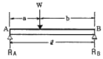
- 40
- 60
- 100
- 1000
(정답률: 54%)
27. 엘리베이터 제어방식 중 교류귀환 제어방식을 사용하는 가장 적합한 이유는?
- 병렬 운전 제어
- 점호각 제어
- 전동기속도 제어
- 정류개선 제어
(정답률: 71%)
28. 전동 덤웨이터 기계실의 천장 높이는 최소 몇㎝ 이상이어야 하는가? (단, 기기의 배치 및 관리에 지장이 있는 경우)
- 60
- 70
- 80
- 100
(정답률: 60%)
29. 주어진 조건과 같은 에스컬레이터의 적재하중은 약 몇[kg] 인가?
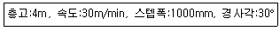
- 1400
- 1870
- 3460
- 6930
(정답률: 64%)
30. 정격속도 인 로프식 엘리베이터 카 꼭 90m/min 대기틈새 기준으로 적합한 것은?(오류 신고가 접수된 문제입니다. 반드시 정답과 해설을 확인하시기 바랍니다.)
- 1.8m이상
- 1.6m이상
- 1.4m이상
- 1.2m이상
(정답률: 57%)
31. 로프와 도르래 홈에 언더커트 홈을 사용하는 이유는?
- 마찰계수 향상
- 윤활 용이
- 로프의 중심 균형
- 도르래의 경량화
(정답률: 77%)
32. 기어의 장점을 설명한 것으로 틀린 것은?
- 강도가 크다
- 높은 정밀도를 얻을 수 있다
- 전동이 확실하다
- 호환성이 나쁘다
(정답률: 80%)
33. 브래이스 로드를 전후좌우 개소에 적절히 설치 하면 카바닥 하중의 어느 정도까지를 균등하게 카틀의 상부에서 하부까지 전달할 수 있는가?
- 1/8
- 2/8
- 3/8
- 4/8
(정답률: 74%)
34. 에스컬레이터에 대한 설명으로 옳지 않은 것은?
- 수송능력은 엘리베이터의 7~10배이며 대량 수송에 적합하다.
- 건축상으로 점유면적이 적고 별도의 기계실이 필요하지 않다.
- 800형은 난간폭이 1000mm이고 시간당 6000명을 수송 할 수 있다.
- 대기시간이 없고 연속적으로 승객을 수송할 수 있다.
(정답률: 81%)
35. 비상용 엘리베이터 운행속도의 기준으로 옳은 것은?
- 30m/min이상
- 45m/min이상
- 60m/min이상
- 90m/min이상
(정답률: 84%)
36. 속도가 30m/min인 교류 1단속도 제어방식의 엘리베이터가 최하층에 수평으로 정지되어 있다. 이 때 카와 스프링 완충기와의 최소거리는 몇[mm] 인가?
- 120
- 150
- 200
- 225
(정답률: 45%)
37. 동력전월설비의 설계기준에서 반드시 정할 사항이 아닌 것은?
- 누설전류
- 변압기 용량
- 과전류차단기 용량
- 배전선 굵기
(정답률: 73%)
38. 엘리베이터용 전동기의 구비요건으로 옳지 않은 것은?
- 기동전류가 클 것
- 기동토크가 클 것
- 회전부의 관성모멘트가 적을 것
- 빈번한 운전에 대한 열적 특성이 양호할 것
(정답률: 79%)
39. 정격전압380V, 정격전류12A일 때 동력전원 설계시 일반적으로 가속전류는 어느 정도로 하여야 하는가?
- 14.4A
- 15A
- 20A
- 24A
(정답률: 41%)
40. 군관리 승객용 엘리베이터 중 1대에만 전면과 후면 출입구를 설치하려고 한다. 틀린 것은?
- 문열림 특별장치가 필요하다
- 파트타임 서비스에 적당하다
- 국내에도 설치할 수 있다
- 동시에 양쪽문이 작동해도 된다
(정답률: 81%)
3과목: 일반기계공학
41. 기어나 피스톤 핀 등과 같이 마모작용에 강하고 동시에 충격에도 강해야 할 때, 강의 표면을 경화하기 위하여 열처리하는 방법이 아닌 것은?
- 침탄법
- 침탄질화법
- 저온소둔법
- 고주파법
(정답률: 71%)
42. 지름이 100mm인 탄소강재를 선반 가공할 때 1회 가공소요시간은 약 몇 초인가? (단, 회전수는 400rpm이고 이송은0.3mm/rev이며 탄소강재의 길이는 50mm이다.)
- 20초
- 25초
- 30초
- 40초
(정답률: 51%)
43. 재료의 성질을 나타내는 세로탄성계수(영률E)의 단위가 맞는 것은?
- N
- N/cm2
- Nㆍm
- N/cm
(정답률: 77%)
44. 속이 찬 회전축의 전달마력이 7㎾인축에 350rpm으로 작동한다면 축의 전달 토크는 약 몇 Nㆍm인가?
- 101
- 151
- 191
- 231
(정답률: 65%)
45. 용적형 펌프에 해당하는 피스톤 펌프는 어느 형식에 속하는 펌프인가?
- 왕복삭 펌프
- 원심식 펌프
- 샤류 펌프
- 회전식 펌프
(정답률: 77%)
46. 코일 스프링에서 코일의 평균지름 D=50mm이고, 유호권수가 10, 소선 지름이 d=6mm이고, 축방향 하중 10N이 작용할 때 비틀림에 의한 전다응력은 약 몇 MPa인가?
- 1.5
- 3.0
- 5.9
- 15.9
(정답률: 45%)
47. 다이얼 게이지로 측정하는 것이 가장 적합한 것은?
- 캠 축의 휨
- 나사의 피치
- 피스톤의 외경
- 피스톤과 실린더의 간극
(정답률: 70%)
48. 길이가 2m이고 직경이 1cm인 강선에 작용하는 인장하중 1600kgf/cm2일 때 강선의 늘어난 길이는? (단, 탄성계수(E)=2.1×106kgf/cm2이다.)
- 0.1941㎝
- 0.1814㎝
- 0.1579㎝
- 0.1327㎝
(정답률: 37%)
49. 절삭 및 비절삭가공 중엣 절삭가공에 속하는 것은?
- 주조
- 단조
- 판금
- 호닝
(정답률: 62%)
50. 그림과 같이 길이 인 단순보의 중에에 집중하중 W를 받는 때 최대 굽힘모먼트(M max 점)는 얼마인가?
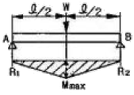
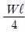
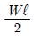
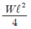
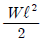
(정답률: 52%)
51. 표준 스퍼 기어에서 기어의 잇수가 25개, 피치원의 지름이 75mm일 때 모듈은 얼마인가?
- 3
- 9.42
- 0.33
- 6
(정답률: 80%)
52. V벨트 전동과 비교한 체인전동의 특징을 설명한 것으로 틀린 것은?
- 전동 효율이 높다
- 고속 회전에 적합하다
- 미끄럼이 없어 속도비가 일정하다
- V벨트 길이보타는 체인길이를 쉽게 조절할 수 있다.
(정답률: 63%)
53. 베어링에 오일 실(oil seal)을 사용하는 가장 중요한 이유는?
- 접촉이 잘 되도록 하기 위하여
- 열발산을 잘하기 위하여
- 유막이 끊어지지 않도록 하기 위하여
- 기름이 새는 것과 먼지 등의 침입을 막기 위해
(정답률: 81%)
54. 다음 중 선반의 4대 주요 구성 부분에 속하지 않는 것은?
- 심압대
- 주축대
- 바이트
- 왕복대
(정답률: 78%)
55. 두께가 같은 10mm인 강판의 겹치기이음의 전면 필렛용접에서 작용하중이 5000N이면, 용접부의 허용응력이 6N/mm2일 때 용접부 유효길이는 약몇 mm이상 이어야 하는가?
- 50
- 59
- 65
- 72
(정답률: 45%)
56. 비중이 2.7인 이 금속은 황금원소를 첨가하여 높은 강도, 가벼운 무게와 내부식성이 강한 합금으로 개선 하여 자동차 트랜스미션 케이스, 피스톤, 엔진블록 등으로 사용되는 것은?
- 납
- 아연
- 마그네슘
- 알루미늄
(정답률: 83%)
57. 나사의 접촉면 사이의 틈이나 나사면을 딸 증기나 기름등이 누출되는 것을 방지하는데 주로 사용하는 너트는?
- 홈붙이 너트
- 캡 너트
- 플랜지 너트
- 원형 너트
(정답률: 85%)
58. 유량이 6m3/min, 손실 양정 6m, 실양정 30m인, 급수펌프를 1750rpm으로 운전할 때 소요 동력은 약몇 ㎾인가? (단, 펌프효율은 0.88이다.)
- 20
- 30
- 35
- 40
(정답률: 38%)
59. 가공 경화된 재료를 연한 재질상태로 돌아가게 하는 열처리 방법은?
- 불림(normalizing)
- 풀림(annealing)
- 뜨임(tempering)
- 담금질(quenching)
(정답률: 70%)
60. 선삭가공이나 드릴로 뚫어진 구멍의 형상과 치수를 정밀하게 다듬질하는 작업은?
- 리밍
- 탭핑
- 다이스 작업
- 스크레이퍼 작업
(정답률: 67%)
4과목: 전기제어공학
61. 그림과 같은 유접점 회로의 논리식과 논리회로 명칭으로 옳은 것은?
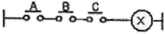
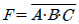
NOT회로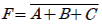
NOT회로- F=A+B+C, OR회로
- F=AㆍBㆍC, AND회로
(정답률: 67%)
62. 직류전동기의 회전 방향을 바꾸려면 어떻게 하는가?
- 입력단자의 극성을 바꾼다
- 전기자의 접속을 바꾼다
- 보극권선의 접속을 바꾼다
- 브러시의 위치를 조정한다
(정답률: 65%)
63. 논리식 A(A+B)를 간단히 하면?
- A
- B
- AB
- A+B
(정답률: 55%)
64. 주파수 50㎐인 교류의 위상차가 π/3 rad이다. 이 위상차를 시간으로 나타내면 몇 sec인가?
- 1/60
- 1/120
- 1/400
- 1/720
(정답률: 40%)
65. 변압기 정격 1차 전압의 의미를 바르게 설명한 것은?
- 정격 2차 전압에 권수비를 곱한 것이다
- 1/2 부하를 걸었을 때의 1차 전압이다
- 무부하일 때의 1차 전압이다
- 정격 2차 전압에 효율을 곱한 것이다
(정답률: 68%)
66. 목표값이 시간에 대하여 변화하지 않는 제어로 정전압장치나 일정 속도제어 등에 해당하는 제어는?
- 프로그램제어
- 추종제어
- 정치제어
- 비율제어
(정답률: 63%)
67. PI제어동작은 프로세스제어계의 정상특성 개선에 흔히 사용된다. 이것에 대응하는 보상요소는?
- 동상 보상요소
- 지상 보상요소
- 진상 조상요소
- 지상 및 진상 보상요소
(정답률: 62%)
68. 그림과 같은 병렬공진회로에서 전류Irk 전압F 보다 앞서는 관례로 옳은 것은?
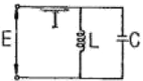
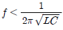
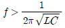
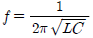
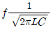
(정답률: 69%)
69. 피드백제어에서 반드시 필요한 장치는?
- 안정도를 향상시키는 장치
- 응답속도를 개선시키는 장치
- 구동장치
- 입력과 출력을 비교하는 장치
(정답률: 78%)
70. 어떤 제어계의 임펄스 응답이 sinωt 일 때 계의 전달함수는?
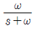
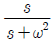
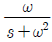
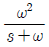
(정답률: 52%)
71. 그림(a)의 병렬로 연결된 저항회로에서 전류I와 I1의 관계를 그림(b)의 블록선도로 나타낼 때 A에 들어갈 전달함수는?
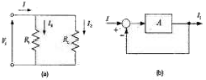
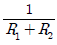
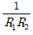
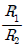
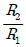
(정답률: 55%)
72. 평행한 왕복도체에 흐르는 전류에 의한 작용력은?
- 반발력
- 흡인력
- 회전력
- 정지력
(정답률: 64%)
73. 직류발전기 전기자 반작용의 영향이 아닌 것은?
- 중성축의 이동
- 자속의 크기 감소
- 절연내력의 저하
- 유기기전력의 감소
(정답률: 64%)
74. 기전력 2V, 용량 10Ah인 축전기 9개를 직렬로 연결하여 사용할 때의 용량은 몇 [Ah]인가?
- 10
- 90
- 100
- 180
(정답률: 63%)
75.
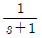
인 함수의 라플라스 역변환식은?- 1-e-1
- 1+e-t
- et
- e-t
(정답률: 47%)
76. 피드백 제어계에 사용되는 용어의 설명으로 틀린 것은?
- 기준 입력요소란 목표치에 비례하는 기준 입력 신호를 발생하는 장치이다.
- 제어요소란 동작신호를 조직량으로 변환하는 요소이다.
- 외란이란 제어량의 값을 변화시키려는 하는 외부로부터의 바람직하지 않은 신호이다.
- 동작신호는 기준입력과 제어량의 편차인 신호이다.
(정답률: 47%)
77. 자동제어의 조절기기 중 연속동작이 아닌 것은?
- 비례제어 동작
- 적분제어 동작
- 2위치 동작
- 미분제어 동작
(정답률: 70%)
78. 2[Ω]의 저항 10개를 직렬로 연결한 경우 병렬로 연결한 경우의 합성저항의 크기는 몇 배인가?
- 150
- 100
- 50
- 10
(정답률: 73%)
79. 스태핑 모터를 사용할 수 없는 기기는?
- X-Y테이블
- 복사기
- 에스컬레이터
- 프린터
(정답률: 75%)
80. 아래의 가) 그림과 같이 직렬결합되어 있는 블록선도를 등가변환한 나) 그림의 ⓐ에 해당 하는 것은?
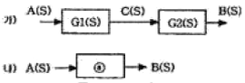
- G1(S)+G2(S)
- G1(S)-G2(S)
- G1(S)ㆍG2(S)
- G1(S)/G2(S)
(정답률: 56%)